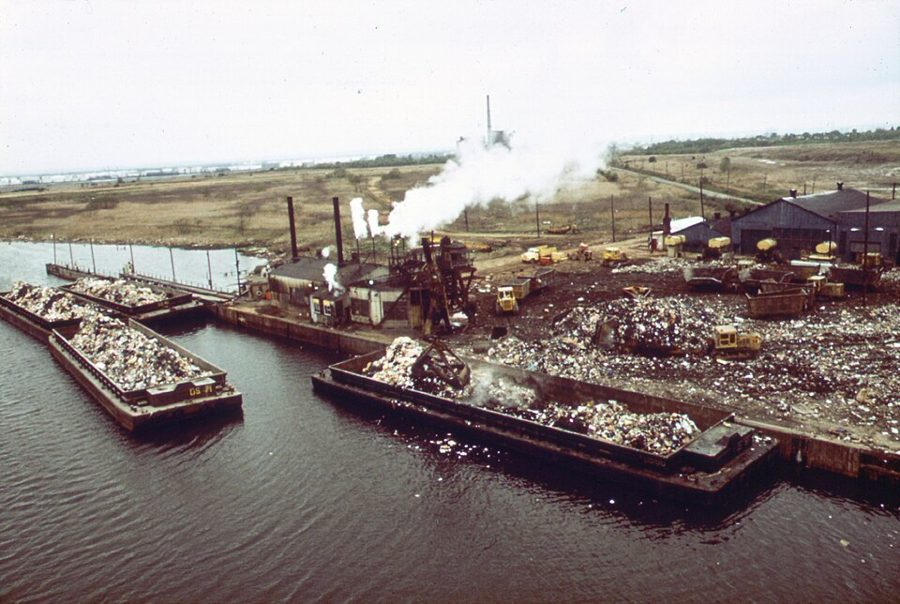

hits 10,000
Industrial Average hits 10,000. Oil is
（道琼斯指数）升到一万点
道琼斯指数 1999 年 3 月 29 日第一次收在 10000 点以上，可见这一段在 1993 年的初稿之后改过。
第 4 章是一张警告清单：懂了存量、流量和回路，系统为什么还总让人吃惊。这一页是前半，毛病都出在我们看的方式上：把脑子里的模型当成世界（§1），只盯着一件件事件（§2），把弯曲的关系当成直线（§3），把图上的云当成真的边界（§4）。好玩的是色卷蛾：一种小虫、一片冷杉林和几种天敌，靠几条弯曲的关系自己起落了几百年；照 Holling 他们的模型，人年年喷药保树，反倒让森林一直停在爆发边缘。
第 1、2 章教了存量、流量、回路，又在「系统大观园」里跑了几个模型；第 3 章讲系统为什么运转得好。第 4 章反过来问：有了这些工具，系统为什么还总让人吃惊？作者的回答是一张清单，这一页是前半：§1 先说一切知识都是模型，§2 讲只看事件，§3 讲用直线去想弯曲的关系，§4 讲把图上的云当成真边界。限制因素、延迟和有限理性在第 4 章后半（04b）。
§2 说计量经济学家找流量之间的统计关系，是『在找不存在的东西』。这句比她的论证说得满：她自己的恒温器例子里，两股热流在结构不变时就一起变。道理（结构一变，旧关系就失效）站得住，论证只靠这一个比喻。
出了意外，是世界出了怪事，还是我们脑子里那张图漏了东西？
读的时候带着这几个问题，读完回来对照「检查一下理解」。
这一页是原书和译本第 4 章的前四节。粗体是本站给的节名，后面是档和译本字数；下面一行是译本的小标题和这一节在译本电子书里开头的几个字，再下面是英文原书的小标题和开头几个词，翻纸书用。读完打个勾。
先把这一页用到的几个概念用书外的例子讲一遍。作者拿它们推出什么，读原书时自己看。后面各页用到时会链回这里。
心智模式是脑子里那张「世界怎么运转」的简图。作者把它和语言、地图、统计表、数据库、方程、程序放在一起：我们以为知道的一切都是模型，没有一样是真实的世界本身。
模型好用，是因为省掉了大部分细节；坑人，也是因为省掉了细节。程序员天天碰到：架构图上五个方框，线上跑着五十个服务；接口文档写「返回 200 就是成功」，现实里还有超时、重试和写了一半的数据。
作者同时说了两句话，缺一句都会读偏：模型和世界通常很吻合，人类靠它活得很成功；可它远远不完整，脑子一次只跟得住几个变量，所以我们常出错、常吃惊。管理学的书里，这个词也常译作「心智模型」。
在这一页：§1 的三条「真理」讲的就是它。第三条举的指数增长和振荡，第 1、2 章的模拟器都演过。
看系统的三层。事件是某一刻发生的一件事；行为是许多事件连成的、随时间的走势，增长、停滞、下降、振荡；结构是产生这种走势的存量、流量和回路。拿体重说：今天秤上多了一斤，是事件；半年里每月涨半斤，是行为；吃进和消耗两股流量，加上「睡得差、更想吃甜的、体重涨、又睡得更差」这条回路，是结构。
只看事件，几乎没法预测，也没法改，秤上的数怎么跳都能编出解释。看到行为，才会问「这条线为什么一直往上」；找到结构，才知道从哪下手。作者还点出行为层常犯的错：拿流量去拟合流量。流量是跟着存量变的，结构一改，过去拟合出来的关系就不灵了。
在这一页：§2 用弹簧玩具、每晚的股评、计量经济学和恒温器四个例子讲这三层。弹簧玩具在引言里讲过：行为出自结构。
线性关系是因和果成固定比例：因多一倍，果也多一倍，画出来是直线，拆开的几块还能加回去。非线性是比例不固定，画出来是弯的：有平缓的一段，也有突然陡起来、甚至掉头的一段。服务器就是现成的例子：按下图那个最简单的算法，利用率从一成涨到五成，平均响应时间只从 11 毫秒变成 20 毫秒；从八成到九成五，却从 50 毫秒冲到 200 毫秒。
作者说非线性更要紧的一面，是它会改变回路之间的强弱：一条回路在某个范围里很有劲，过了一个点就使不上劲，另一条接过主导，系统换了一种行为。这就是第 2 章的主导地位转换，她说非线性是它的主要原因。别和两样混：效果晚到是延迟；加这一样没用、因为缺的是另一样，是限制因素（04b）。
在这一页：§3 施肥那组数是最简单的例子；色卷蛾的方框里，原文三处斜体的 nonlinearly 是故事的三个拐点。
存量流量图两头的云，意思是「从哪来、到哪去，这次不管」。云画在哪，哪里就是图的边界。作者的提醒是：现实里几乎没有真的边界，云里其实是存量，只是暂时没画。
不画是可以的，前提是云里那个存量在你关心的这段时间里，不会反过来影响图里的东西。一个开源项目的维护者只盯着「待合并的 PR」：每周进来多少，合掉多少。PR 从一朵云里来，贡献者不在图上，平时没问题；可如果 PR 一排就是两个月，贡献者会慢慢走掉，这个没画的存量变小，进来的 PR 也越来越少。只看图上那一格，还以为积压在好转。
画窄了出这种意外，画宽了也出问题：一张连着一切的大图，答不了眼前的问题。该画到哪，看要问什么。

在这一页：§4 先揭开第 2 章汽车库存两头的云，再讲画窄（修路、排污、国家公园）和画宽（「我的模型比你的大」）。
读英文原书时值得停一下的词和句：熟词生义、Meadows 的口语和比喻。灰色斜体是原句里连续的几个词，在英文电子书里搜它就能找到；标「每个字都认识」的，是每个词都眼熟、合起来意思却变了的，最容易读错。点「记下」收进词本。
对着译本读这四节时，下面这些地方会把人读歪。方框里是译本的原句，在译本电子书里搜它就能找到；灰色斜体是英文原书那一处。只收意思错了、反了、漏了的，措辞上的出入不收。全书的勘误汇总在译本勘误。
That you and I are surprised
译本：「远远超出了我们的想象」
原文这一句没译：你我会吃惊，说明我们自己的程度，不亚于说明动态系统。这是整章的立足点，毛病在看的人的模型上。同段 humbling 是「让人谦卑」，译成了尴尬和束手无策。
this book is poised on a duality
译本：「我们需要保持多方面的均衡」
原文是在交代这本书的立场：我们知道得很多，又远远不够，这两面作者都信。译本说成「需要保持均衡」，像是一句处世建议。
but not always the most important
译本：「但往往不是最主要的」
原文只说事件不总是最要紧的，也就是有时是。译本说成「往往不是」，方向推远了一步。作者没有说事件不重要，说的是只看事件解释不了什么。
a more reliable indicator of the health
译本：「或者使公司更健康」
原文举的是想改变股市行为的几个目标：波动小一些，更可靠地反映公司的健康，更好地鼓励投资。改的是市场这个系统，不是公司本身。
has a way of changing the rules
译本：「身处其中的参与者可以随时改变游戏规则」
Gleick 的意思是：在非线性系统里，玩游戏这件事本身往往会改变规则，没有谁在随意改。这正是 §3 要讲的，关系会随着系统的状态变弱、变强、消失。
or the response squared, or no response
译本：「也可能得到四倍的收获」
原文：推力加倍，回应可能是六分之一，可能是原来的平方，也可能没有。同段的「惊喜」原文只是 surprises，没有「喜」。
several of the systems in the zoo
译本：「我们在第3章中提到的几类系统」
原文说的是 zoo，也就是第 2 章的「系统大观园」。§4 开头说汽车库存在「上一章」也错了，那也是第 2 章。读者去第 3 章找，是找不到的。
Until this century, no one much cared.
译本：「直到本世纪」
作者写书时还在 20 世纪，同一个方框里说的就是 1950 年代开始喷药。今天读来像 21 世纪，时间线就乱了。
until the mill is ready for them
译本：「让树木生长，直到成材」
那位护林人的原话是：保住这些树，直到锯木厂准备好用它们。迁就的是工厂的节奏，不是树的生长。这句话正点出喷药为的是经济上的稳定，和同一个方框里「生态上稳定、经济上不稳定」那句接得上。
By 1980, spraying costs were getting
译本：「到20世纪80年代」
原文是到 1980 年，新不伦瑞克省「那一年」花了 1250 万美元。译成整个年代，后面的「当年」就没了着落。
Every few decades, however, there was
译本：「每隔一二十年」
原文是每隔几十年。同一个方框里还说，这个系统以几十年为周期振荡，两处要对得上。
increases more than proportionately to the availability
译本：「数量增长远快过相应的食物供给的增长」
原文：色卷蛾的繁殖潜力，随着它爱吃的冷杉变多而不成比例地升高。这是三处「非线性」的第一处，说的是一条弯曲的关系。译本成了「虫子长得比食物快」，非线性就看不出来了。
the predators can multiply no faster
译本：「二者关系转变为非线性关系」
原文：本来是虫越多、天敌繁殖越快；过了某个点，虫再多天敌也快不了，变成「没有关系」。非线性说的是这条关系整体弯了、到顶了，不是一种新关系的名字。这样译，读者会以为「非线性」是关系的一个类别。
perpetually on the edge of population explosion
译本：「因而虫害可以每年爆发一次」
原文：喷药让冷杉一直很密，把虫推到繁殖曲线上一直处在爆发边缘的位置，也就是 Holling 说的「亚爆发状态」。悬着没炸和每年炸一次，是两种不同的局面。
if the policy fails, there will be
译本：「甚至可能彻底毁掉整个森林」
原文只说：一旦政策失手，会出现前所未见强度的爆发。「疲于应付」「毁掉整个森林」是译本加的，把一个模型的推论说成了灾难预言。
Side-effects no more deserve the adjective
译本：「只不过是“主要结果”的副产品而已」
Hardin 的题词：「副作用」这个词本身藏着误解，它的意思大约是「我没料到或不愿想的后果」；其实副作用和主要作用一样，都是后果，不比它更「副」。译本说成副作用是主要结果的副产品，正好反了。
can be exhausted with surprising suddenness too
译本：「都在以惊人的速度枯竭」
原文：矿、井、油田也可能出乎意料地突然枯竭，和填埋场「突然满了」是一对，讲的是只把它们当云的人会被吓一跳。译本成了对现状的断言，还加了煤炭、水源一串。
models that describe metaphysical flows
译本：「因为建模本身就是一个形而上的过程」
原文：描述无形之物流动的模型，离不开云，比如愤怒、爱、自尊，确实说不清从哪来。说的是这类流量，没有说建模本身是形而上的。
if the population in question experienced significant
译本：「这些边界就显得过于宽泛且无用了」
原文：人口有大量迁入迁出，或者要讨论墓地够不够时，「从摇篮到坟墓」这条边界就不管用了。原文没有「过于宽泛」：迁移的人正是从图外的云里来去的。「产房床位」「剧烈波动」是译本加的；图题 More clouds 是「更多的云」。
boundaries can produce problems when we forget
译本：「边界划定不当，很可能会带来一些问题」
原文：为了想清楚，我们必须画边界；忘了它是自己人为画的，才会出问题。译本只剩「划定不当会有问题」，丢了这一节最要紧的那一层。
throwing the waste into a river
译本：「如果上游的污染源得不到有效治理」
原文：你想把污水扔进河里了事，下游的城镇会让你明白，想污水问题得把整条河画进来。说的是排污的人把边界画窄了。译本把「你」换成了受害的下游，例子就不再是在讲自己画窄边界。
but may not be necessary for figuring
译本：「无法发现如何减少二氧化碳排放」
原文：把地球气候模拟到全部细节有很多用处，但为了想出一国怎样减排，未必需要。译本说成会让人迷失、找不到关键，把「不必要」说成了「有害」。
What happens to an unemployed person
译本：「失业人员在其登记期满失效以后怎么办」
第三幅图的流入原文是 layoff rate，每月被裁、新登记失业的人数；流出是 hiring rate，每月被雇用的人数。图上写成「失业率」「就业率」，在中文里是比例，从存量算出来的，不是流量。图注这三问译得对。
下面是作者在这四节里的主张，本站按主张之间的逻辑重排，不按原书顺序；每条后面是节号，拿不准就回书里那一节再读一遍。
语言、地图、统计、程序、脑子里的图都是模型。她说模型和世界通常很吻合，人类才这么成功；可它远远不完整，脑子一次只跟得住几个变量，所以常出错、常吃惊。这本书立在这对两面性上。懂了这一章的几种特征，吃惊会少些，但不会没有。
§1事件像冰山露出水面的尖，最显眼，但不总是最要紧的。把事件连成随时间的走势，才看得出是在增长、停滞还是振荡；长期的行为是结构的线索，而结构才说明「为什么」。每晚股评那种「因为美元跌了所以股市涨了」，是事件对事件。
§2System structure is the source of system behavior. System behavior reveals itself as a series of events over time.— §2。本站译：系统的结构是系统行为的来源。系统的行为显现为随时间展开的一连串事件。
她说多数经济分析停在行为层，计量模型重流量、轻存量。更要紧的是流量随存量变，不随别的流量变，所以找流量之间的稳定关系，是在找不存在的东西。恒温器为例：开一扇窗，过去拟合的关系就不成立。这类模型短期预测相当好，长期很差，教人怎样改善经济最差。
§2推力加倍，回应可能是六分之一、平方，或什么都没有。她说更要紧的是非线性改变回路的相对强弱，是主导地位转换的主要原因。色卷蛾是她转述的 Holling 和 Baskerville 的模型：天敌到顶，虫口起飞；吃光冷杉，虫群崩溃。喷药让森林停在爆发边缘。
§3图上的云其实是存量，只是暂时不画。画窄了，意外从云里来：修路招来沿线住户，排污惹来下游城镇；画宽了，信息堆成山，答不了眼前的问题。该画在哪，看要问的问题；忘了边界是自己画的，才出问题。
§4There is no single, legitimate boundary to draw around a system.— §4。本站译：围绕一个系统，并没有唯一一条正当的边界可画。
合起来：这一页的几种意外，毛病都在看的人的模型上：只看事件，把弯的当成直的，把云当成墙。第 4 章后半（04b）讲另外三种，限制因素、延迟和有限理性。
处境是本站编的，放在你可能遇到的地方。先自己想，再点开看分析；有的题不只一个答案。第 4 章两页的题目都问「这是哪种意外」，选项里有另一页的类型。全书的情境题汇总在情境题。
一个线上服务周一早上挂了四十分钟。复盘报告的结论是：「某同事上周五发布了一个配置变更，导致数据库连接耗尽。」改进措施是发布要多一个人审批。有人翻出半年的监控：数据库连接数一直在涨，余量从五成一路降到不到一成；那次变更只多占了几个连接。
这份复盘的看法错在哪？是哪种意外？
主要是被事件迷惑。报告找到一个导火索、一个人、一条新规定；同样的变更半年前发布，什么事也不会有，说明系统早变了。半年的连接数曲线是行为层，该接着问结构：谁在占越来越多的连接，新建的为什么一直多于释放的？
不是有限理性：那说的是当事人在自己的信息里做了合理的事，这里犯错的是写复盘的人。延迟沾边，但病根不是效果晚到。余量快没了时多几个连接就压垮，这一下是非线性的，它解释了为什么偏偏是这一次；连接数成了最缺的东西也说得通，04b 讲。这道题问的是复盘的看法。
书里对应：§2 别被表象所迷惑
一个团队规定合并代码要 1 人批准。后来改成 2 人，线上缺陷少了近一半。组长很满意，又改成 4 人。这一次缺陷几乎没少，合并要等的时间却从半天拖到三天；大家开始把好几个改动攒成一个大提交，评审的人看不过来，两个月后缺陷反而比 2 人时还多。
「多一个人批准，少一些缺陷」为什么不灵了？是哪种意外？
非线性。同一样投入（批准人数），第一次加倍缺陷减半，第二次加倍几乎没用，再往后反而变坏，投入和效果的曲线弯了，还掉了头，和书里施肥 100、200、300 磅那组数形状类似。更深一层：等待变长改变了大家提交的方式，「多看一眼少一个错」那条关系让位给了「等得久就攒大提交」，这是作者说的非线性改变回路的强弱。
不是限制因素：那是加这一样没用，补上另一样就又有效；这里补什么也救不回第 3、4 个批准人的作用。也不是延迟：两个月后来的不是迟到的好效果，是变坏。
书里对应：§3 在非线性的世界里，不要用线性的思维模式
一个数据团队的服务器磁盘老是告警。他们写了个脚本，每晚把超过 7 天的日志和中间结果打包传到公司的对象存储，本地磁盘从此清清爽爽，季度总结里还记了一功。一年半后财务发来通知：公司对象存储的费用翻了三倍，他们这一项占四成，里面的文件绝大部分再没人打开过；那个存储桶也到了配额上限，别的组写不进去了。
这次意外属于哪一种？
主要是边界。团队的图只画了本地磁盘这一格，流出那头画成一朵云：传走了就是没了。云里其实是另一个存量，只进不出，一直在涨，直到账单和配额把它送回来。和书里垃圾扔「出去」的填埋场道理相通。自测：把图往外扩一圈，画上对象存储，意外的来源就在图里了。
延迟沾边，账单晚到让问题更晚被看见，但账单天天到也没用，只要没人把那个桶画进图里。配额最后成了限制因素，那是边界画窄的结果。有限理性是第二个答案：团队按自己的考核做了合理的事，换个团队多半也一样，「谁存谁付钱」正是改激励。这道题问的是图漏了什么，所以先答边界。
书里对应：§4 恰当地划定边界
Meadows 1993 年写成初稿，书 2008 年出版。下面挑出这一页里能被后来的研究或事情检验的说法，分「书里 / 当时 / 今天」几栏，并给一个结论。结论判的是标题里「书里的说法：」后面那一句。全书的这一节汇总在今天怎么看。
读完作者的主张，再看它站不站得住。每一块摆出三样：主流怎么看，作者怎么看，本站的评论。最后一句是本站对这一页的总体判断。
主流看法：经济学内部有方向相近的批评：Lucas 1976 年指出，用历史数据估出来的关系，政策一变就可能失效，因为人会跟着新规则改变做法，后来叫「卢卡斯批判」。此后宏观模型越来越多地从人怎么决策推起，而不只拟合历史数据之间的关系。
作者的看法：流量随存量变，不随别的流量变；只看流量的行为层模型，短期预测还行，长期差，告诉人怎么改善最差。§2
本站的评论：机制说得对，和卢卡斯批判方向一致。「找不存在的东西」说过头了：她自己的恒温器例子里，两股热流受同一个存量管着，结构不变时确实一起变，拟合出来的关系能拿来做短期预测。她的论证只靠这一个比喻，读的时候当提醒，不当定理。程序员的版本很现成：监控里「请求数和 CPU 成正比」这种经验公式，拿来做下个月的容量规划可以；换了缓存策略、换了机型，就得重新估，更不能拿它解释系统为什么这样。
主流看法：Holling 1973 年提出生态学的「适应力」（resilience）概念，他和 Ludwig、Jones 1978 年发表的色卷蛾模型成了教科书例子：系统有不止一个稳定状态，过了门槛就跳过去。但昆虫学家 Royama 1984 年用新不伦瑞克的长期野外数据重新分析，认为色卷蛾数量的基本振荡不是食物短缺、鸟类等的捕食或天气造成的；他和同事 2017 年的后续研究说，越冬后幼虫的死亡主要来自寄生蜂、病原这类天敌。管理上，新不伦瑞克省 2014 年起试行「早期干预」：常年监测，虫口刚开始上升的热点就处理，不等成片落叶再大面积喷药。
作者的看法：非线性让回路换主导；喷药前这个系统自己振荡，生态上稳定；喷药保树让它长期停在爆发边缘，一旦失手会爆发得前所未有。§3
本站的评论：拿它学非线性没问题，不受机制之争影响：「虫多天敌也多」这条关系总会在某处到顶，系统随之换一种行为。要分清的是，方框里的因果链是 Holling 和 Baskerville 的模型，作者转述它，不是野外实验证明的定论。最值得带走的是她那句：生态上稳定的，经济上不稳定。为了保住每一棵树，管理者把自己锁进了一项停不下来的政策。
主流看法：经济学把落在别人云里的后果叫外部性（externality）：排污的工厂不为下游的损失付钱。教科书的药方是让代价回到画图的人身上，收费、配额、责任。「从摇篮到坟墓」在工程上也成了一套方法，叫生命周期评价。
作者的看法：没有单独的系统，世界是连续的；边界该画在哪，看要问的问题；画窄、画宽都会出意外。§4
本站的评论：她说的边界比外部性宽：不只是谁付钱，还有学科、部门、国界在哪里切。程序员最常见的版本是「我的服务达标了」，而重试流量、日志、账单都流进了别人的云。她也提醒反方向：一张什么都连上的图答不了眼前的问题。实用的做法是先写下要回答的问题，再决定画到哪一圈，换个问题就重画。
本站的总体看法：这一页给的是读系统的三个习惯：从事件往下看到行为和结构，别把弯的当直的，记得云是自己画的，今天都站得住。说重了的是对计量经济学那句「找不存在的东西」；色卷蛾是一个模型的解读，机制至今有争论，拿它学非线性没问题，别当定论。
先在心里答，再点开。答错的那题，回书里把对应那一节再读一遍。
吻合是说在身边、日常的范围里够用，人类才活得这么成功；不完整是说它只跟得住几个变量，碰上指数增长、振荡、远处的后果就会漏。两句合起来：知道得很多，但远远不够。
事件对事件。差行为（这几年的走势）和结构（什么存量在推动价格）。这种解释既预测不了明天，也说不出怎样让市场少些波动。
进出房间的热量都随室温这个存量变，所以历史上它们一起变，拟合得出关系。开一扇窗、加一层保温，结构变了，关系就不成立；想让屋子更暖、更省油，得去看结构。
以为 200 磅能多收 20 蒲式耳，于是加倍。实际过了某个量土壤就被伤了，效果是零，再多就是负的。因和果的比例不固定，这就是非线性。
在很大的范围里，虫越多天敌繁殖越快；过了某个点，天敌没法再快，这条关系就没了，虫口起飞。最后是虫吃死了大片冷杉，食物没了，虫群崩溃：主导从繁殖的增强回路换成了饿死的调节回路。
云里的存量在你关心的时间里不会明显影响系统时，可以不管。原料一直充足、需求一直在，汽车经销商的图两头画云就行；一旦可能缺料或滞销，就得画进来。人口的出生死亡画成云通常没事，有大量迁入迁出就不行。
图大得什么都连上，信息堆成山，反而遮住了眼前问题的答案。作者的例子：要想出一个国家怎样减排，未必需要一个全细节的地球气候模型。
用一句话说这一页：
想一想：你最近一次被一个系统「吓了一跳」（服务突然挂了、体重突然涨了、项目突然延期），事后看，是只看了事件、把弯的当成了直的，还是有一朵云没打开？
读过又忘了，从这里想起来。挑的是这一页最值得记住的例子和说法，不按原书顺序；每条后面是节号，想细看就回书里那一节。全书各页的这一节都收在全书回顾。
一句话：我们知道的都是模型；看系统要从事件往下看到行为和结构，提防弯曲的关系，记得图上的云是自己画的。
语言、地图、数据库、脑子里的图都是模型。它们和世界通常很吻合，又远远不完整，所以懂得再多也还会吃惊。
§1事件最显眼，却几乎解释不了什么。把事件连成走势看行为，再找产生它的存量、流量和回路。
§2流量跟着存量变。只拿流量拟合流量，结构一变，比如有人开了窗，过去的关系就不成立了。
§2虫多天敌也多，过了某个点天敌追不上，虫口起飞；吃光冷杉，虫群崩溃。照 Holling 他们的模型，喷药保树反而让森林停在爆发边缘。
§3云里其实是存量。修路招来沿线住户，排污惹来下游城镇；画得太大也不行，比谁的模型大答不了眼前的问题。
§4